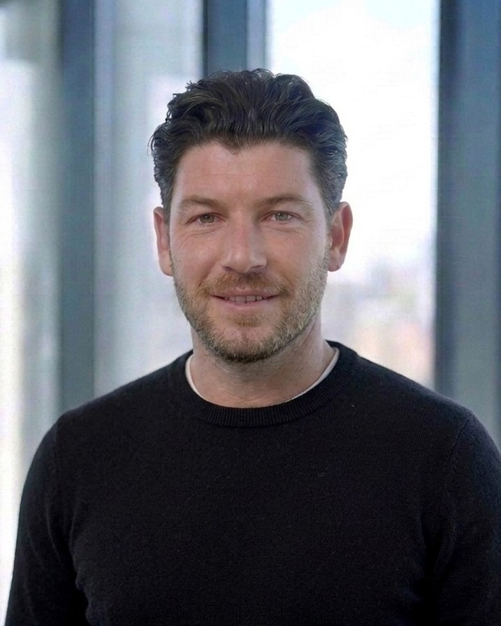
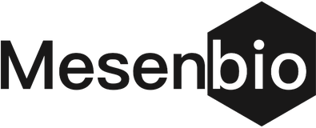

Mechanism-of-action figure
Figures that make the biology easy to follow
01
Medical illustrator
Our medical illustrator draws mechanism-of-action figures and other scientific visuals, so an investor can follow the biology from a single slide.
We work on narratives, pitch decks, brand, websites and LinkedIn for biotech, medtech and deep tech companies, from pre-seed to Series A.
We started SRIES Lab after years of working with life science founders who could happily explain their science to another scientist in five minutes, then struggled when they were pitching to a generalist investor or a pharma BD lead.
The hard part is usually translating the science for investors and licensing partners, deciding how much technical detail to keep and what order to say things in, and then making the commercial opportunity just as clear, in words an investor could repeat to their investment committee.
We’re a bit niche, because we’re clear about who we want to help: biotech, medtech and deep tech founders preparing for a raise or a licensing deal, from pre-seed to Series A.
Most raises take 12 to 18 months from first conversations to close. During that time, investors keep an eye on what you’re saying, online, at events, in industry media and through their networks. Much of that happens on LinkedIn, so we manage LinkedIn for founders and their companies through the raise. We’ve seen how much easier a first meeting is when the investor already knows who you are.
Keeping your pitch deck, website and LinkedIn page and profiles telling a clear and consistent story for that long is hard while you’re also running a company and generating data. It’s hardest in the quiet months between milestones, when there’s no new data to share and going silent is the easy option. We help with both parts, getting the story right and keeping it visible until the round closes.

Chris has spent 20 years in life sciences communications, across pharma, biotech and medtech. For the last five he has worked directly with biotech founders, CEOs and executives on their investor narratives, and on their LinkedIn profiles and content ahead of a raise. He leads our narrative and LinkedIn work, and is based in Milan.

Jordan has 12 years’ experience in design and brand, with a portfolio across life sciences, biotech and technology companies through Digital Cre8. Jordan designs our pitch decks, websites and brand identities for founders raising their next round, and is based in London.
Some projects need skills beyond our own. We bring people in only when a project needs them, and we’ll tell you who they are and what they cost before they start.
Mechanism-of-action figure
Figures that make the biology easy to follow
Our medical illustrator draws mechanism-of-action figures and other scientific visuals, so an investor can follow the biology from a single slide.
Every claim, with its source
Specialist writers work on the technical content, so it stays accurate once it’s been shortened.
The right specialist for the job
We bring people in only when a project needs them
If you need something we don’t cover ourselves, tell us and we’ll find someone who does.

Biotech, medtech and deep tech companies, from pre-seed to Series A. Whether you’re preparing for a first raise, struggling to pin down a clear story or aren’t getting the response you’d hoped for from investors, or preparing for a bigger round or licensing deal.
Companies we’ve worked with

“We found Jordan a real pleasure to work with — thoughtful, responsive, and commercially sharp. Jordan took the time to properly understand our objectives and translated them into clear, effective design and structure, making the process straightforward and genuinely value-adding.”
We’ll talk through where you are in your raise and what you already have in place, and work out your next steps.